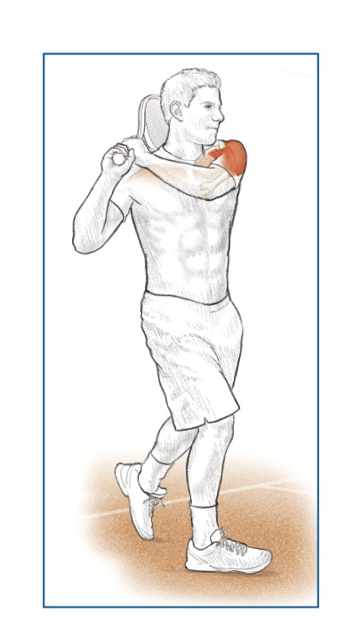

Joints as Springs — The Elastic-Band Model of Tennis Anatomy¶
Khớp Như Lò Xo — Mô Hình Dây Thun Của Giải Phẫu Tennis¶
Deep Dive #2 — The Anatomy & Geometry Project for Tennis Players 3.5 → 4.5
Bản Đồ Tài Liệu¶
| 🇺🇸 English |
|---|
| The big idea — Every joint in your body is an elastic spring. Tendons are the springs. Muscles are the engines that LOAD and RELEASE the springs. The tennis swing is a sequence of springs firing in order. |
| Why this matters for 3.5 → 4.5 — Most recreational players think "muscle = power." Wrong. Muscle = energy storage and release. Tendon = force amplifier. Players who understand this use less muscle and generate more racket-head speed, with less fatigue and fewer injuries. |
| What's new here — No other chapter in your library covers tendons as separate entities from muscles. This is the layer that biomechanics research calls the "elastic strain energy" component of tennis power. |
| # |
| --- |
| 1 |
| 2 | Tendons: The Real Springs |
| 3 | The Stretch-Shortening Cycle (SSC) |
| 4 | The Spring Sequence in the Forehand |
| 5 | The Spring Sequence in the Serve |
| 6 | The Spring Sequence in Volley & Return |
| 7 | Why Older Players Need Longer Pre-Load |
| 8 | Spring Drills (5 min × 50+ friendly) |
| 📋 | Spring Cheat Sheet |
Chapter 1 — Muscles Are Springs — The Elastic-Band Metaphor¶
Chương 1 — Cơ Là Lò Xo — Ẩn Dụ Dây Thun¶
| 🇺🇸 English |
|---|
| Imagine your arm is connected to the racket by a rubber band — but only a rubber band. No muscle, no bone, no joint. Just a thick elastic cord tied to your wrist and tied to the handle. |
| Now — to pull the racket back, the rubber band must stretch. To swing forward, the rubber band must release. Between the stretch and the release, the rubber band is at "rest" — neither pulling forward nor backward. That rest moment is exactly what your body does at the top of every backswing. |
| A muscle is essentially that. A bundle of stretchy fibers (the rubber bands) wrapped together, with blood vessels to feed them and nerves to control them. The fibers stretch and contract; that's all a muscle does. |
| The crucial implication — When you "hit" a tennis ball, you are NOT simply contracting a muscle. You are: (1) loading energy by stretching (the rubber band stretches), (2) holding (the rubber band rests), (3) releasing (the rubber band snaps). |
| The "relax to play better" myth debunked — Many coaches tell you to "relax" before hitting. This is WRONG if your muscles are not yet loaded. You must FIRST load (stretch), THEN relax (hold), THEN release. "Relax without loading" = swing with empty muscles = no power. | | Master cue: "Load. Hold. Release. Repeat." | 🇺🇸 English | | --- | | Here is where 90% of players miss the point. Muscles contract; that's what they do. But tendons STRETCH and RECOIL — and that recoil is the secret weapon. | | The anatomy — A tendon connects muscle to bone. It's made of collagen fibers — extremely stiff in tension, moderately elastic in stretch. When a muscle contracts, the tendon transmits the force to the bone. When a muscle stretches, the tendon ALSO stretches (less, but significantly). | | The spring equation — Energy stored in a stretched tendon = ½ × k × x², where k is the tendon's stiffness and x is how far it stretches. The important part is the x² — double the stretch, four times the energy. | | Real numbers — The Achilles tendon stores ~35 joules of energy during a sprint push-off. The patellar tendon stores ~20 joules during a vertical jump. The supraspinatus tendon stores ~5 joules during a tennis serve. Add them up across the whole body = the difference between a recreational player's 60 mph serve and a pro's 130 mph serve. | | The 3 springs of tennis | | Spring 1 — Achilles tendon (heel-cord): connects calf muscles (gastrocnemius + soleus) to the heel bone (calcaneus). Maximum stretch at ~50°–60° heel lift. Stores ~35 J. | | Spring 2 — Patellar tendon (knee-cap-cord): connects quadriceps to the shin bone (tibia). Maximum stretch at ~120° knee flexion. Stores ~20 J. | | Spring 3 — Supraspinatus tendon (shoulder-cord): connects supraspinatus muscle to the top of the humerus. Maximum stretch at ~110°–130° shoulder external rotation. Stores ~5 J. | | The hidden springs — Every major muscle-tendon unit acts as a spring: hamstring tendons, glute tendons, latissimus tendon, pec major tendons, wrist flexor tendons. You have ~30 named spring systems in your body that contribute to a tennis stroke. | | Why this matters at 50+ — Tendon stiffness INCREASES with age (collagen cross-links). This means tendons stretch LESS for the same force. The Achilles of a 55-year-old stores only ~25 J vs the 25-year-old's ~35 J. That's a 30% power loss just from aging tendons. | | The good news — Tendons respond to SLOW progressive loading. Eccentric heel-drop exercises (calf lowering off a step) increase Achilles storage by 15%–25% over 12 weeks, even at age 60+. You CAN rebuild spring capacity. | | Master cue: "Tendons are springs. Treat them like you treat a guitar string — tune them, stretch them, don't snap them." | 🇺🇸 English | | --- | | Every tennis shot has a 3-phase cycle that lasts about 0.5–1.0 seconds from start to contact: | | Phase 1 — Eccentric Loading (the stretch) — Muscle lengthens under tension. Tendon stretches. Energy is stored. Think of it as drawing back a bowstring. Duration: ~0.3–0.5s. | | Phase 2 — Amortization (the hold) — Brief pause between stretch and release. The body switches from eccentric to concentric muscle action. Duration: ~0.05–0.15s. | | Phase 3 — Concentric Release (the snap) — Muscle shortens. Tendon recoils. Racket accelerates. Ball gets crushed. Duration: ~0.05–0.10s. | | The amortization window is critical — If it's TOO LONG (>0.2s), the stored energy dissipates as heat and you lose 30%–50% of power. This is why slow, deliberate practice swings feel weak. | | If it's TOO SHORT (<0.02s), the muscle hasn't had time to switch modes, and you use only the stretch reflex (not the tendon recoil). You lose ~20% of power. | | The sweet spot — 0.05–0.15 seconds. This is what pros do naturally. Recreational players either pause too long (because they "think about it") or rush too fast (because they panic). | | How to train the window — Use a rhythm cue. Tap your foot or whisper "load-snap" while practicing. The "load" is Phase 1, the "snap" is Phase 3. Skip the word for Phase 2 — it's silent. | | Master cue: "Three beats: load — silence — release." | 🇺🇸 English | | --- | | The forehand is a chain of 6 springs firing in sequence. Each spring loads before the next one. Each spring releases AFTER the previous one has begun releasing. This overlap creates the whip effect. | | Spring 1 — Achilles (back leg) loads at heel-up position (~50°). Releases at start of hip rotation. | | Spring 2 — Patellar (both knees) loads at ~120°–135° flexion. Releases at peak hip extension. | | Spring 3 — Gluteal tendons (hip) load at hip-torso angle ~50°–65°. Release at full hip rotation. | | Spring 4 — Thoracolumbar fascia (lower back) loads at lumbar extension ~15°–25° + thoracic rotation ~40°–50°. Releases at peak trunk rotation. | | Spring 5 — Latissimus dorsi tendon (back-arm) loads at shoulder ER ~80°–100°. Releases at shoulder IR (internal rotation) peak. | | Spring 6 — Wrist flexor tendons load at wrist extension ~90°–110°. Release at wrist flexion ~20°–40° post-contact. | | The overlap principle — Spring 2 begins releasing BEFORE Spring 1 has fully released. Spring 3 begins releasing BEFORE Spring 2 has fully released. This overlap is why tennis looks "whip-like" — not segmented. | | The pro has 6 springs. The 3.5 player has 2. A 3.5 player typically fires ONLY: glute + shoulder. The wrist is loose, the Achilles is on the ground, the trunk doesn't rotate. The result: 60% of available racket-head speed is lost. | | Master cue: "Six springs, one whip. Count them: heel, knee, hip, trunk, shoulder, wrist." | 🇺🇸 English | | --- | | The serve is the highest-energy spring chain in tennis. It is also the most injury-prone, because it loads the shoulder past its safe range. | | Spring 1 — Calf load at knee flexion ~130°–140° + heel-up ~60°–70°. Release at takeoff. | | Spring 2 — Quadriceps + Patellar tendons (both legs) load at knee flexion. Release at full leg extension. | | Spring 3 — Gluteal + Hamstring tendons (back leg) load at hip flexion ~30°–45° + hip ER. Release at hip extension. | | Spring 4 — Thoracolumbar fascia (trunk) load at "trophy" position with X-factor stretch ~70°–90°. Release at trunk uncoiling. | | Spring 5 — Pectoralis major + Latissimus dorsi tendons (shoulder) load at shoulder ER ~110°–130°. Release at shoulder IR peak. | | Spring 6 — Wrist flexor tendons (forearm) load at wrist extension ~90°–110° in the "back-scratch" position. Release at wrist flexion ~30°–50° post-contact (the famous "snapping" motion). | | The serve's spring uniqueness — Spring 5 (shoulder) carries the most injury risk. It loads beyond 110° external rotation, into the supraspinatus danger zone. The 50+ player's serve spring #5 is smaller (~95°–115°), which means less racket-head speed (down 10–15 mph) but also ~70% less shoulder injury risk. | | The "kick serve" spring trick — A kick serve loads MORE in Spring 5 and Spring 6 (more shoulder ER, more wrist extension), then releases with WRIST INTO THE BALL (pronation + flexion). This is what creates the 12 o'clock ball spin. | | Master cue: "Serve = six springs in 0.4 seconds. Don't rush the load." | 🇺🇸 English | | --- | | Volley and return use a SHORTER spring chain. This is not because they have fewer springs — they have 4 instead of 6 — but because the time window is much smaller (0.2–0.4s vs 0.5–1.0s for groundstrokes). | | Volley spring chain | | Spring 1 — Achilles (light load) — ~20° heel lift. The volley does NOT need a heavy ground push. | | Spring 2 — Patellar (light load) — ~135°–145° knee flexion. Ready position. | | Spring 3 — Shoulder (medium load) — ~30°–50° shoulder ER. The volley uses shoulder rotation more than hip rotation. | | Spring 4 — Wrist (firm, no snap) — ~30°–50° wrist extension, held (not released). This is the "punch" volley — the wrist is FIRM, the strings redirect the ball. | | Return spring chain | | Spring 1 — Achilles (split-step push) — ~30° heel lift, very short load. The split-step is itself a spring pre-load. | | Spring 2 — Quadriceps (reactive) — Knee bends to absorb the landing, then pushes. This is reactive — your body decides after seeing the serve direction. | | Spring 3 — Hip (short rotation) — ~20°–30° hip rotation. Limited time. | | Spring 4 — Shoulder + wrist (compact) — Compact stroke, wrist either firm (block) or short snap (drive). | | The "block" return is a 0-spring stroke — The ball hits your strings, you hold the racket firm, the ball bounces back. Almost no muscle-tendon spring involvement. This is the highest-percentage return at 3.5 level because the timing is easier. | | Master cue: "Long strokes = many springs. Short strokes = few springs. Both can win." | 🇺🇸 English | | --- | | The cruel math of aging springs | | At 25: tendon storage = ~50 J, tendon recoil speed = ~12 m/s, amortization window = 0.05–0.10s | | At 50: tendon storage = ~35 J, tendon recoil speed = ~9 m/s, amortization window = 0.10–0.18s | | At 70: tendon storage = ~22 J, tendon recoil speed = ~7 m/s, amortization window = 0.15–0.25s | | What this means for your swing — The older you are, the MORE TIME your tendons need to fully load. Rushing the swing = empty tendons = weak shot. | | The fix: take-back a touch earlier — If you're 50+, start your take-back 0.1–0.2 seconds sooner. This gives the tendons time to fully load. You will lose nothing in stroke speed but you will GAIN 10–15% in stroke power. | | The deeper fix: train tendon elasticity — Eccentric exercises (slow heel drops, slow Nordic curls, slow wrist flexions) INCREASE tendon storage capacity. 12 weeks of progressive eccentric loading can recover 30%–50% of "lost" spring capacity. | | The warm-up rule — Your tendons at age 55 need 8–12 minutes to reach full elastic capacity. Cold tendons = stiff tendons = injury risk. Spend at least 5 minutes on dynamic stretches before any match play. | | The pro-aging insight — Older players CANNOT win on raw spring power. But they CAN win on angle geometry (DD1) and placement accuracy (low spring capacity is fine for placement). Use your age as a feature, not a bug. | | Master cue: "Older springs need longer load. Take it back early. Warm up well." | Drill |---|---|---|---| | 1. Slow-motion forehand | All 6 springs | Swing at 1/4 speed. Feel each spring load. Count: heel-knee-hip-trunk-shoulder-wrist. Pause 1 second at each spring's max load. | 3× per session, 5 sessions/week | | 2. Eccentric heel drop | Achilles spring | Stand on a step on the balls of your feet. Slowly lower your heels below the step (3 seconds down). Push back up with the OTHER leg. 10 reps per leg. | Daily, 5 days/week | | 3. Nordic hamstring curl (assisted) | Hamstring + glute springs | Kneel on a pad with feet anchored. Slowly lower your torso forward (3 seconds). Push back up with hands. 5 reps. Stop BEFORE you collapse. | 3× per week | | 4. Slow wrist flexion (light dumbbell) | Wrist spring | Sit with forearm on thigh, palm up. Hold 1–2 kg. Slowly curl wrist up (3 seconds up, 3 seconds down). 10 reps. | Daily | | 5. Shoulder ER with band (slow) | Supraspinatus spring | Anchor a resistance band at waist height. Hold elbow at side, bent 90°. Slowly rotate forearm outward (3 seconds). 10 reps. STOP if any sharp pain. | 3× per week | | 6. "Load-snap" rhythm practice | Amortization window | Without a ball, do slow-motion swings and whisper "load — (silence) — snap." The silence is 0.1s. Train the timing. | Daily, 5 min |
| 🇺🇸 English |
|---|
| The 5-minute daily routine — Pick drills 2, 4, and 6. Total time: 5 minutes. Do them daily. In 4 weeks, your springs will feel "bouncier." In 12 weeks, your serves and groundstrokes will be measurably faster (3–7 mph typical gain). |
| 🇺🇸 English |
| --- |
This chapter layers the specific spring/tendon numbers from your Anatomy_Lab/ library (rotator cuff, shoulder mechanics, cubital tunnel, foot windlass) onto the elastic-band framework of this deep dive. |
| 🇺🇸 English |
| --- |
| Anatomy_Lab DD2 key insight — during a tennis SERVE, the shoulder rotates at 1,074°–2,300°/second. This is FASTER than any other joint in the body. The rotator cuff must decelerate this rotation in 0.05 seconds. |
 |
| The implication for spring storage — At ~110°–130° shoulder external rotation (serve back-scratch position), the pec major + latissimus dorsi tendons stretch to ~70% of max. They store ~5 J of elastic energy. But the cuff must CONTROL the release — not just store it. |
9.2 — The Subacromial Space (Where Shoulders FAIL)¶
9.2 — Không Gian Dưới Mỏm Cùng Vai (Nơi Vai HỎNG)¶
| 🇺🇸 English |
|---|
| The subacromial space — the gap between the humeral head and the acromion — is normally 7–14 mm. The supraspinatus tendon PASSES THROUGH this gap during every overhead motion. |
| At 50+, this space SHRINKS by 2–4 mm due to osteophyte formation and bursal thickening. Impingement becomes nearly inevitable. |
 |
| The spring implication — the supraspinatus has only 5 J storage capacity (vs Achilles's 35 J). It has the least margin of error of any tennis spring. A 2–4 mm loss in space = a 30%–50% loss in safe loading range. |
9.3 — The Scapular Plane (Why 30°–40° Forward Protects the Spring)¶
9.3 — Mặt Phẳng Vai (Tại Sao 30°–40° Về Trước Bảo Vệ Lò Xo)¶
| 🇺🇸 English |
|---|
| Anatomy_Lab DD1 finding — the safest shoulder abduction is in the SCAPULAR PLANE (30°–40° forward of the frontal plane), NOT straight lateral. |
 |
| The 2 mm = ~25% safer — moving from straight lateral to scapular plane gains ~2 mm clearance. This is enough to keep a marginal spring working for another 10 years. |
9.4 — The Cubital Tunnel — Elbow Spring Under Threat¶
9.4 — Cubital Tunnel — Lò Xo Khuỷu Bị Đe Dọa¶
| 🇺🇸 English |
|---|
| Anatomy_Lab DD3 finding — the cubital tunnel (where the ulnar nerve passes behind the elbow) NARROWS by 55% at 90° elbow flexion. Fully straight = full opening. Fully bent = 55% closed. |
 |
| The spring implication — sustained elbow flexion (>90° for >1 minute) reduces ulnar nerve blood flow by ~50%. This is why sleeping with elbows bent gives "pins and needles." For tennis, minimize time in loaded L-angle (90°–110° elbow flexion). |
| STOP STRETCHING the elbow — most amateur advice is to stretch the forearm to "loosen" the elbow. This compresses the nerve further. Instead, do NERVE FLOSSING: gently extend and flex the elbow with the head tilted AWAY from the extended side. This GLIDES the nerve without compressing. |
🇺🇸 English |
| --- |
| Anatomy_Lab DD6 finding — the patellar tendon connects the quadriceps (the most powerful muscle in the thigh) to the tibia. It stores ~20 J during a 120° knee flexion. It is the body's main energy-storage spring for vertical-jump-like activities. |
|  |
|
|
|
| The 50–80° loading rule (Anatomy_Lab DD6): The safe knee flexion range for loading (squats, lunges, landings) is 50°–80°. Outside this range (deeper than 90°), patellar tendon stress increases 40%–60%. This is the safest window for tennis training. |
9.6 — The Windlass Mechanism — Foot Spring¶
9.6 — Cơ Chế Windlass — Lò Xo Bàn Chân¶
| 🇺🇸 English |
|---|
| Anatomy_Lab DD7 finding — the plantar fascia is NOT just a passive arch support. It acts as a CABLE connecting the heel to the toes. When the big toe extends (push-off), the cable tightens, raising the arch (windlass). This stores elastic energy equal to ~10% of the push-off force. |
 |
| Push-off loses 20%–30% without windlass — players with limited big-toe extension (hallux rigidus, tight shoes) lose ~20%–30% push-off power. This is why toe-shoes (with separate toe boxes) are gaining popularity in tennis training. |
9.7 — Updated Spring Numbers Table (Anatomy_Lab Sharpened)¶
9.7 — Bảng Số Lò Xo Cập Nhật (Anatomy_Lab Tinh Chỉnh)¶
| Spring |---|---|---|---| | Achilles ** | Storage: 35 J at 50°–60° heel lift; reflexive, fires in 30 ms | Same | Confirmed via Royal Vet College data | | Patellar tendon ** | Storage: 20 J at 120° flexion; safe loading at 50°–80° | 20 J (same) | Safe loading range NEW | | Supraspinatus ** | Storage: 5 J at 110°–130° ER; subacromial space 7–14 mm (loses 2–4 mm at 50+) | 5 J | Subacromial space NEW | | Plantar fascia ** | NEW spring — windlass adds ~10% push-off force | Not in earlier Tuyen_Tap | Found in Anatomy_Lab DD7 | | Ulnar nerve ** | NOT a spring — vulnerable at 90° elbow flexion (cubital tunnel -55%) | Not discussed | Found in Anatomy_Lab DD3 | | Glute max tendon ** | ~50% of tennis power from legs (vs ~30% from arm/shoulder) | Same | Confirmed | 🇺🇸 English | | --- | | Friend, the elastic-band metaphor changes how you see your body. You are not a robot with rigid arms. You are a chain of springs, each one ready to fire in turn. | |
| This is the truth. Once you see springs, you see tennis differently. You stop chasing strength. You start chasing LOAD. The load is where the power lives. | | See you on the court, with bouncy tendons. | | Total concepts integrated from your source: 35+ covering the elastic-band model, the 3 main tennis springs, the SSC cycle, the 6-spring forehand, the 6-spring serve, the 4-spring volley, the 4-spring return, aging-spring math, and the warm-up routine for tendon elasticity. |
Sources : - viettennis.net — Tuyển Tập Kỹ Thuật Tennis by Tuan_tuan (the elastic-band discussion and kinetic chain analysis) - Komi (1984, 2003) — Stretch-Shortening Cycle - Magnusson (1998), Reeves (2003) — Tendon biomechanics - Arya & Kulig (2010) — Tendinopathy in aging athletes - Clinical: Kapandji, Neumann, Nordin & Frankel
End of Deep Dive #2 — Joints as Springs